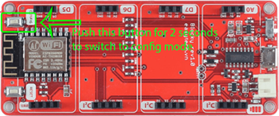
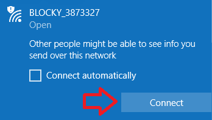
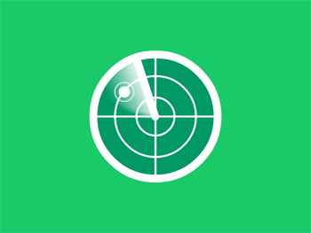

<md-dialog>
    <div layout="row">
        <md-dialog-content flex="nogrow" style="width: 600px">
            <div>
                <md-card>
                    <md-toolbar>
                        <div class="md-toolbar-tools">
                            <h2>
                                <md-icon md-svg-icon="md-menu"></md-icon>
                                <span>Register new device</span>
                            </h2>
                        </div>
                    </md-toolbar>
                    <md-stepper-card-content class="md-no-padding">
                        <md-steppers md-dynamic-height md-disable-tabs-behavior="true" md-stretch-steppers="always" md-selected="vm.selectedStep">

                            <!-- Start step one -->
                            <md-step label="" ng-disabled="vm.stepProgress < 1">
                                <md-step-body>
                                    <div>
                                        <div layout="column" layout-align="space-between center">
                                            <div flex layout="row" layout-align="center center">
                                                
                                            </div>
                                            <div flex>
                                                <h6>A) Press the button as a image for 2 seconds. Blocky will switch to config
                                                    mode.</h6>
                                            </div>
                                            <div flex layout="row" layout-align="center center">
                                                
                                            </div>
                                            <div flex>
                                                <h6>B) Connect to Blocky with name BLOCKY_XXXXXXX.</h6>
                                            </div>
                                        </div>
                                        <md-step-actions layout="row">
                                            <div flex layout="row" layout-align="end top">
                                                <md-button class="md-warn" ng-click="vm.closeDialog()">CANCEL</md-button>
                                                <md-button type="submit" class="md-primary md-raised" ng-click="vm.enableNextStep(); vm.loadAccessPointList()">NEXT</md-button>
                                            </div>
                                        </md-step-actions>
                                    </div>
                                </md-step-body>
                            </md-step>
                            <!-- End step one -->

                            <!-- Start step two -->
                            <md-step label="" ng-disabled="vm.stepProgress < 2">
                                <md-step-body>
                                    <div layout="column" layout-align="center center" layout-padding>
                                        <div flex layout="column" layout-align="center center" class="md-block">
                                            <h6>Scanning blocky Device</h6>
                                            
                                            <h5 ng-hide="vm.connectNotification">Cannot connect to Blocky, re-connect to your home wifi and click button "Reload"</h5>
                                        </div>
                                        <md-step-actions flex layout="row">
                                            <div flex ng-show="vm.connectNotification">
                                                <md-button ng-click="vm.moveToPreviousStep()">PREVIOUS</md-button>
                                            </div>
                                            <div flex layout="row" layout-align="end top" ng-show="vm.connectNotification">
                                                <md-button class="md-warn" ng-click="vm.closeDialog(); vm.showConfirmCancel()">CANCEL</md-button>
                                            </div>
                                            <div flex ng-hide="vm.connectNotification">
                                                <md-button ng-click="vm.reloadPage()">RELOAD</md-button>
                                            </div>
                                        </md-step-actions>
                                    </div>
                                </md-step-body>
                            </md-step>
                            <!-- End step two -->

                            <!-- Start step three -->
                            <md-step label="" md-complete="vm.stepData[2].data.completed" ng-disabled="vm.stepProgress < 3">
                                <md-step-body>
                                    <form name="myForm">
                                        <md-content layout-padding>
                                            <div layout="column">
                                                <div flex="60">
                                                    <md-select ng-model="selectedWifi" placeholder="Select a wifi">
                                                        <md-option ng-value="wifi" ng-repeat="wifi in vm.APList" required>
                                                            <div layout="row" layout-align="space-around center">
                                                                <div flex="10" ng-if="wifi.rssi < -100">
                                                                    
                                                                </div>
                                                                <div flex="10" ng-if="wifi.rssi < -86 && wifi.rssi >= -100">
                                                                    
                                                                </div>
                                                                <div flex="10" ng-if="wifi.rssi < -70 && wifi.rssi >= -85">
                                                                    
                                                                </div>
                                                                <div flex="10" ng-if="wifi.rssi >= -70">
                                                                    
                                                                </div>
                                                                <div flex="90" style="padding-left: 20px; ">{{wifi.ssid}}</div>
                                                            </div>
                                                        </md-option>
                                                    </md-select>
                                                </div>

                                                <div flex="20">
                                                    <md-input-container class="md-block">
                                                        <input ng-model="passWifi" type="password" placeholder="Password" required>
                                                    </md-input-container>
                                                </div>

                                                <div flex="20">
                                                    <md-input-container class="md-block">
                                                        <input ng-model="blockyName" type="text" placeholder="New Blocky's name" required>
                                                    </md-input-container>
                                                </div>

                                            </div>
                                        </md-content>
                                    </form>

                                    <md-step-actions layout="row">
                                        <div flex>
                                            <md-button ng-click="vm.moveToPreviousStep(); vm.loadAccessPointList()">PREVIOUS</md-button>
                                        </div>
                                        <div flex layout="row" layout-align="end top">
                                            <md-button class="md-warn" ng-click="vm.closeDialog(); vm.showConfirmCancel()">CANCEL</md-button>
                                            <md-button type="submit" class="md-primary md-raised" ng-disabled="myForm.$invalid" ng-click="vm.enableNextStep(); vm.saveSetting(selectedWifi.ssid, passWifi, blockyName); vm.closeDialog(); vm.showConfirmReload()">SAVE</md-button>
                                        </div>
                                    </md-step-actions>
                                </md-step-body>
                            </md-step>
                            <!-- End step three -->

                        </md-steppers>
                    </md-stepper-card-content>
                </md-card>
            </div>
        </md-dialog-content>
    </div>
</md-dialog>